Computer Parts
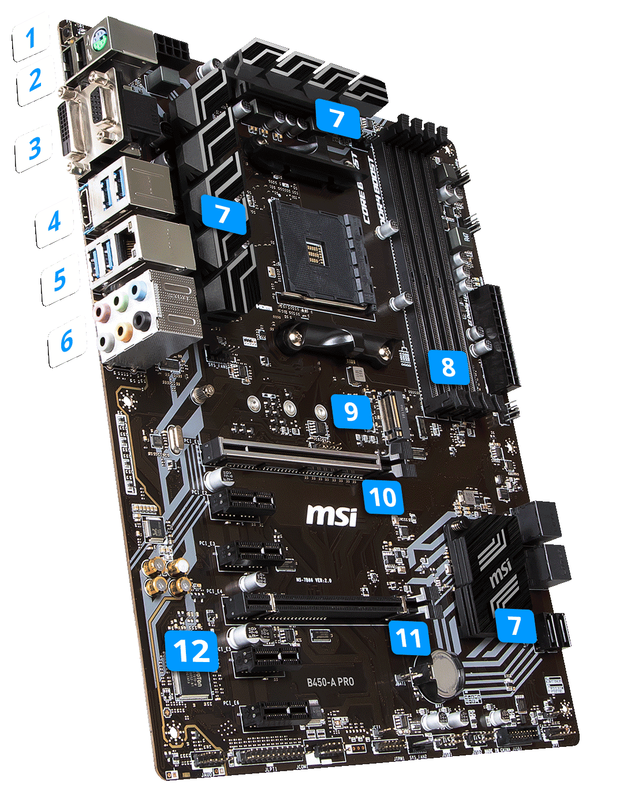
Here will discuss different computer parts, and how peripherals are connected. I will use Ryzen B450 Pro motherboard as an example.
One of the most difficult tasks for setting a PC is to connect all connectors.
- Power Supply of Motherboard: ATX 24-Pin 12 V PSU Connector. (ATX: Advanced Technology Extended, PSU: Power Supply Unit).
- Power Supply of CPU: it is a 8 pins cable extended from Corsair RM750 Fan.
- A1425L 12S-2 Chassis (case) fan: CHA_FAN can use 3 pins cable.
- AMD Wraith Cooler Fan: CPU_FAN. It has 4 pins with a plate between pin 2 to 4.
- There are other fan marks, like SYS_FAN (system fan), etc.
- USB 9 pin connector
- USB 19 pin connector
- HD Audio
- SPK/PLED: Speaker/Power LED, 4 pin connector.
- PWRBTN: Power Button, 2 pin.
- RESET, 2 pin.
- HDDLED: HDD LED Indicator to show hard disk drive and SSD activity, 2 pin.
- Triangle sign: positive. Left: +, Right: -.
- CORSAIR RM 750
- V-NAND SSD 970 EVO
- Graphic card
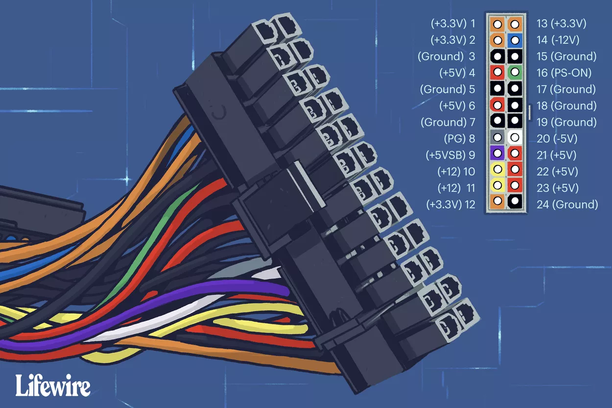
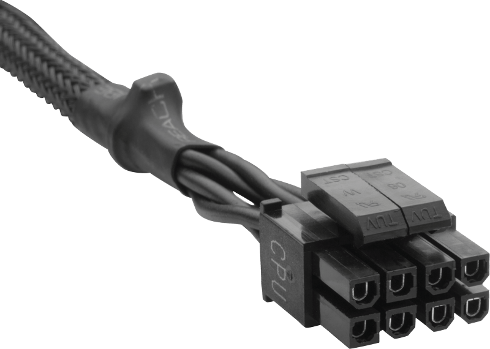
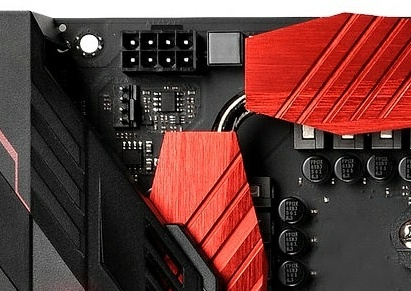
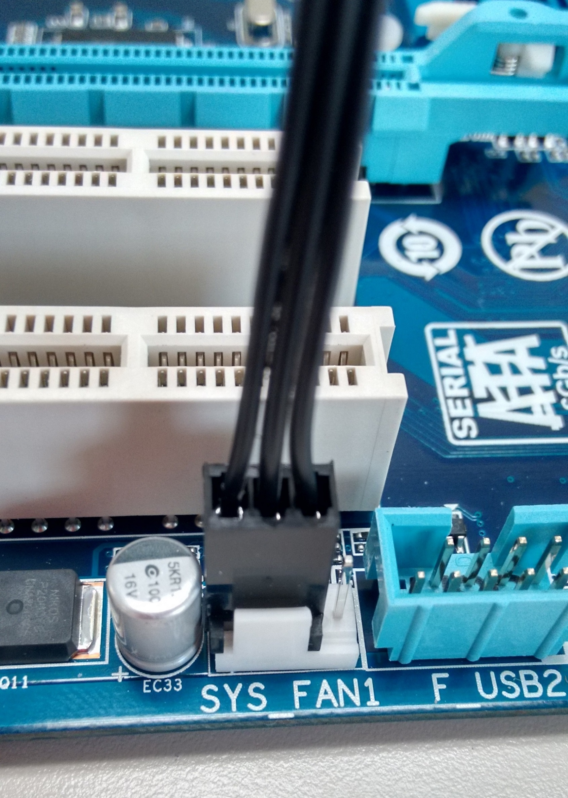
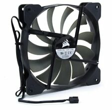
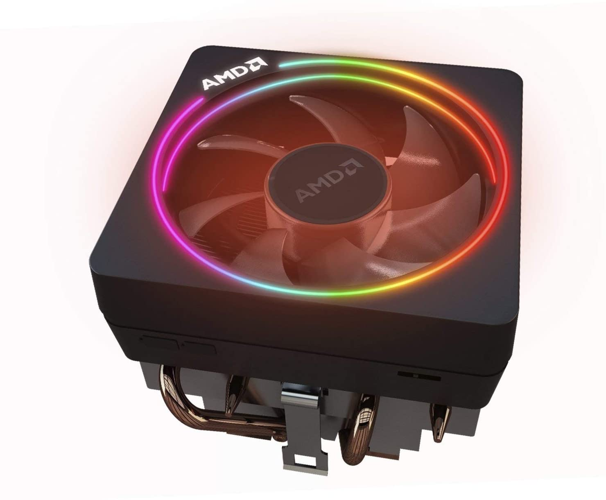
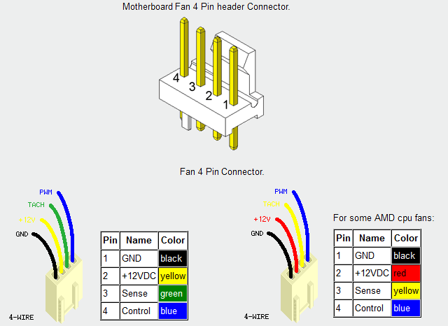
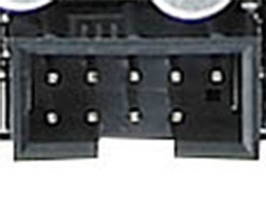
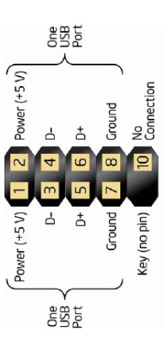
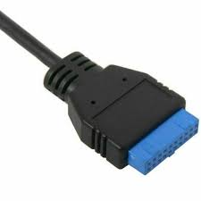
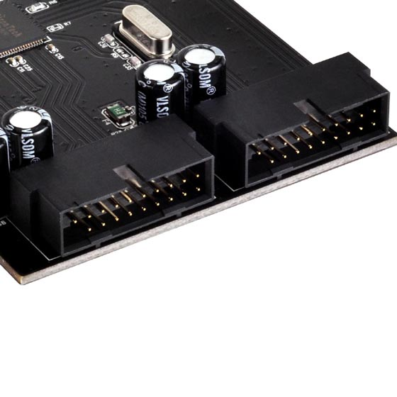
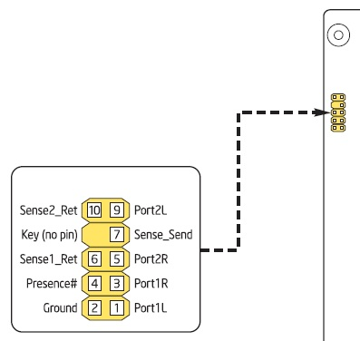
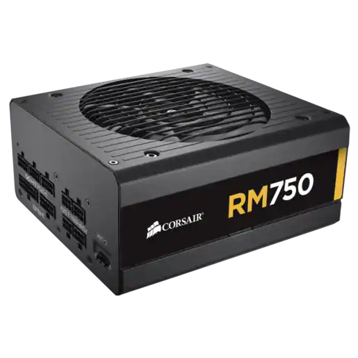
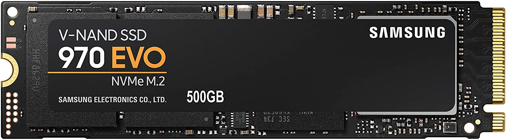
Other built PCs
- HPE ProLiant ML110 Gen10 Xeon 4210 - 2.2GHz 16GB No HDD - Tower Server
References
- ATX 24-pin 12V Power Supply Pinout
- gpu water block for water cooling
- Hydro X Series XR5 360mm Water Cooling Radiator
- Corsair Hydro X Series, XG7 RGB 20-SERIES GPU Water Block for NVIDIA GeForce RTX 2080 Ti Founders Edition (Precision Construction, Aluminium Backplate, Flow Indicator Customisable RGB Lighting) Black
- Seagate 4 TB IronWolf 3.5 Inch Internal Hard Drive for 1-8 Bay NAS Systems (5900 RPM, 64 MB Cache, 180 TB/year Workload Rating, Up to 180 MB/s, Model: ST4000VNZ008), Silver
- Vengeance RAM 8/16/32 Gb each